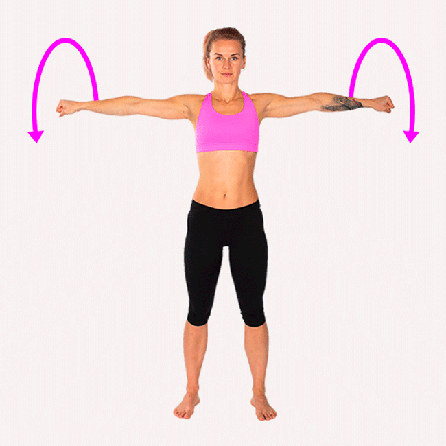

Posición inicial: De pie, con la espalda recta y los brazos relajados a los costados.
Dirección: Movimiento circular amplio hacia atrás y luego hacia adelante.
Fases: Eleva los hombros hacia las orejas (concéntrica), llévalos hacia atrás y desciende suavemente (excéntrica).